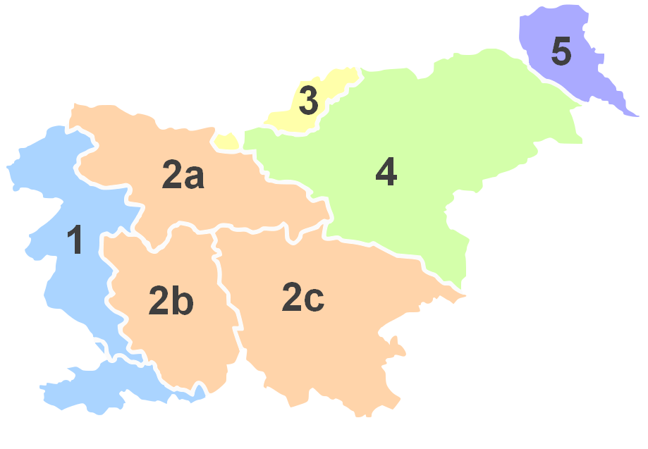

Slovenia by Region
Slovenia has a modern system of administrative districts, which was established by the socialist regime of Tito after Wold War II. It replaced a completely different system which developed historically during the long time Slovenia belonged to the Austro-Hungarian-Empire. Between the wars, Slovenia was occupied and the border or front was located in the middle of the country between Postojna and Planina. So there are modern administrative regions used for car plates and administrative stuff, but there are still names like Notranjska. There is a Notranjski Muze, a National park of that name, and much more. The old names are used widely in tourist brochures, because they sound better. And they are based on geographic (and as a result geologic) features, in contrary to the modern borders. The conclusion of this long explanation is simple: we decided to structure the country following the historical Austria-Hungarian borders, because they are helpful for our topic: underground sites, mostly caves.
| Borders of the Historical Habsburgian Lands in present-day Slovenia | |||||
| No. | English | Slovene | German | geographic | |
|---|---|---|---|---|---|
|  | 1 | Littoral | Primorska | Küstenland | mediterranean and pre-alps |
| 2 | Carniola | Kranjska | Krain | ||
| 2a | Upper Carniola | Gorenjska | Oberkrain | alps | |
| 2b | Inner Carniola | Notranjska | Innerkrain | dinaric plateaus | |
| 2c | Lower Carniola and White Carniola | Dolenjska in Bela krajina | Unterkrain und Weißkrain | dinaric plateaus | |
| 3 | Carinthia | Koroška | Kärnten | alps | |
| 4 | Styria | (Spodnja) Štajerska | Untersteiermark | pre-alps and dinaric plateaus | |
| 5 | Prekmurje | Prèkmüre (Hungarian: Muravidék) | Übermurgebiet | pannonian | |
 1. Primorska (Littoral)
1. Primorska (Littoral) Dimnice Jama (Smoke Cave)
Dimnice Jama (Smoke Cave)- Divaška Jama (Divaska Cave)
 Paradana Ledenika Jama
Paradana Ledenika Jama Smrekova Draga
Smrekova Draga- Skocjanske Jame (Skocjan Caves)
- Sveta jama (Saint Cave)
- Jama Vilenica (Caves of Vilenica)
 Antonijev Rov
Antonijev Rov Blejski vintgar
Blejski vintgar- 2.b. Notranjska (Inner Carniola)
- Cerknisko Jezero or Cerknica Lake
- Krizna Jama (Krizna Cave)
- Planinska Jama (Planina Cave)
- Predjamska Jama (Predjama Cave)
- Planina karst polje and seasonal lake
 Boka
Boka